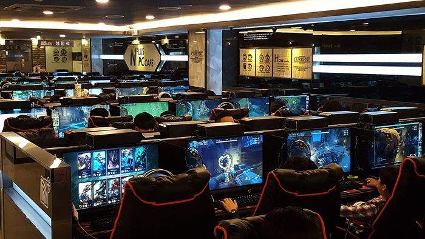

Team Korea
Korea has established over the years that they dominate the pro scene.
The country relies on its talented players to get exposure for the nation so that they can provide good income and earnings for their respective pro teams.
As for income, in Korea the average pro player makes roughly $18k-$50k and can definitely hit a high in the millions. We will discuss more of that on the Stats page
Korea gaming cafes
These cafes that are all around the country to help young kids develop their knack for gaming.
Unlike the USA, koreans actually support their youth to play games and develop a strong mind
The government has a law for the entire country to be provided with fiber-optic internet. This gives high speed internet access to everyone who games, which provides an extreme advantage when playing games that require no buffer like First Person Shooters genre.